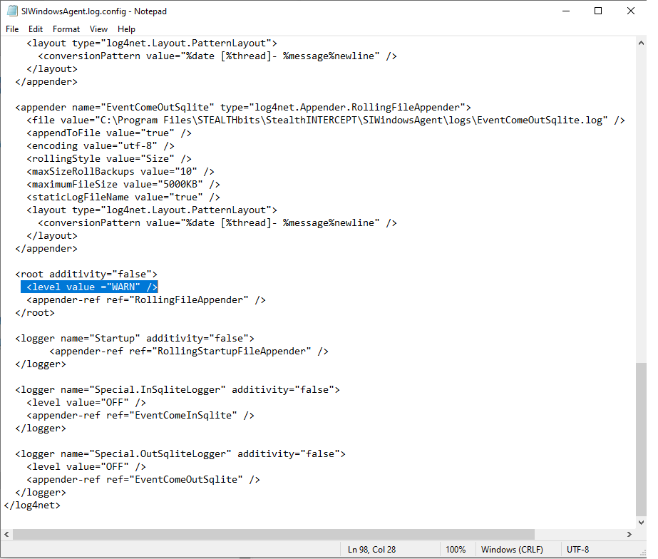

Summary: Enabling debug logging on the SteathINTERCEPT Windows agent
Issue: How to enable debug logging on the SteathINTERCEPT Windows agent.
Instructions:
There are two options.
Option 1.
-Access the server with the SI Windows agent running.
-Open the Windows Agent installation folder. The default location is ...\STEALTHbits\StealthINTERCEPT\SIWindowsAgent\
-Edit the file named SIWindowsAgent.log.config in favorite text editor.
-Change WARN to DEBUG in the following portion of that file:

-Save the .log.config file and restart the SIWindowsAgent service.
Option 2.
-Open StealthINTERCEPT Administration Console on the SI management server.
-Select 'Agents'
-Click on the Pencil icon at the top left of the window.
-Change the drop-down under New Agent Log Level to DEBUG
-Highlight desired agents you wish to change the log level of from the list below..
-Click the Update Log Levels button.
After collecting debug logs, set StealthINTERCEPT Windows agent logging back to WARN.
Module: SI - Windows Agent
Salesforce Article ID: 000001064